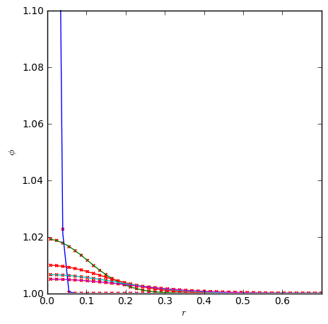

∗ Diffusion
pyro solves the constant-conductivity diffusion equation implicitly using multigrid. Chapter 7 of the notes below summarize the methodology:
The diffusion equation is discretized using Crank-Nicolson differencing (this makes the diffusion operator time-centered) and the implicit discretization forms a Helmholtz equation solved by the pyro multigrid class. The main parameters that affect this solver are:
| [driver] | |
| cfl | the "CFL" number for the diffusion equation. Since we are doing an implicit discretization, this is the multiple of the explicit timestep to take.) |
| [diffusion] | |
| k | the conductivity (constant) |
∗ Examples
gaussian
The gaussian problem initializes a strongly peaked Gaussian centered in the domain. The analytic solution for this shows that the profile remains a Gaussian, with a changing width and peak. This allows us to compare our solver to the analytic solution. This is run as:
./pyro.py diffusion gaussian inputs.gaussian

The above figure shows the scalar field after diffusing significantly from its initial strongly peaked state. We can compare to the analytic solution by making radial profiles of the scalar. The plot below shows the numerical solution (red points) overplotted on the analytic solution (solid curves) for several different times. The y-axis is restricted in range to bring out the detail at later times.

∗ Exercises
The best way to learn these methods is to play with them yourself. The exercises below are suggestions for explorations and features to add to the advection solver.
Explorations
- Test the convergence of the solver by varying the resolution and comparing to the analytic solution.
- How does the solution error change as the CFL number is increased well above 1?
- Setup some other profiles and experiment with different boundary conditions.
Extensions
- Switch from Crank-Nicolson (2nd order in time) to backward's Euler (1st order in time) and compare the solution and convergence. This should only require changing the source term and coefficents used in setting up the multigrid solve. It does not require changes to the multigrid solver itself.
- Implement a non-constant coefficient diffusion solver—note: this will require improving the multigrid solver.